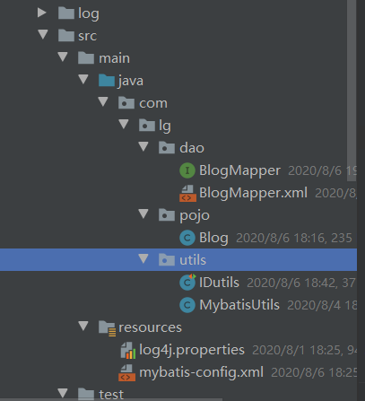

动态SQL
介绍
什么是动态SQL：动态SQL指的是根据不同的查询条件 , 生成不同的Sql语句.
官网描述：
MyBatis 的强大特性之一便是它的动态 SQL。如果你有使用 JDBC 或其它类似框架的经验，你就能体会到根据不同条件拼接 SQL 语句的痛苦。例如拼接时要确保不能忘记添加必要的空格，还要注意去掉列表最后一个列名的逗号。利用动态 SQL 这一特性可以彻底摆脱这种痛苦。
虽然在以前使用动态 SQL 并非一件易事，但正是 MyBatis 提供了可以被用在任意 SQL 映射语句中的强大的动态 SQL 语言得以改进这种情形。
动态 SQL 元素和 JSTL 或基于类似 XML 的文本处理器相似。在 MyBatis 之前的版本中，有很多元素需要花时间了解。MyBatis 3 大大精简了元素种类，现在只需学习原来一半的元素便可。MyBatis 采用功能强大的基于 OGNL 的表达式来淘汰其它大部分元素。
-------------------------------
- if
- choose (when, otherwise)
- trim (where, set)
- foreach
-------------------------------
之前写的 SQL 语句都比较简单，如果有比较复杂的业务，我们需要写复杂的 SQL 语句，往往需要拼接，而拼接 SQL ，稍微不注意，由于引号，空格等缺失可能都会导致错误。
那么怎么去解决这个问题呢？这就要使用 mybatis 动态SQL，通过 if, choose, when, otherwise, trim, where, set, foreach等标签，可组合成非常灵活的SQL语句，从而在提高 SQL 语句的准确性的同时，也大大提高了开发人员的效率。
搭建环境
字段：id，title，author，create_time，views
CREATE TABLE `blog` (
`id` varchar(50) NOT NULL COMMENT '博客id',
`title` varchar(100) NOT NULL COMMENT '博客标题',
`author` varchar(30) NOT NULL COMMENT '博客作者',
`create_time` datetime NOT NULL COMMENT '创建时间',
`views` int(30) NOT NULL COMMENT '浏览量'
) ENGINE=InnoDB DEFAULT CHARSET=utf8
1、创建Mybatis基础工程

2、IDutil工具类
public class IDUtil {
public static String genId(){
return UUID.randomUUID().toString().replaceAll("-","");
}
}
3、实体类编写 【注意set方法作用】
import java.util.Date;
public class Blog {
private String id;
private String title;
private String author;
private Date createTime;
private int views;
//set，get....
}
4、编写Mapper接口及xml文件
public interface BlogMapper {
}
<?xml version="1.0" encoding="UTF-8" ?>
<!DOCTYPE mapper
PUBLIC "-//mybatis.org//DTD Mapper 3.0//EN"
"http://mybatis.org/dtd/mybatis-3-mapper.dtd">
<mapper namespace="com.lg.mapper.BlogMapper">
</mapper>
5、mybatis核心配置文件，下划线驼峰自动转换
<settings>
<setting name="mapUnderscoreToCamelCase" value="true"/>
<setting name="logImpl" value="STDOUT_LOGGING"/>
</settings>
<!--注册Mapper.xml-->
<mappers>
<mapper resource="mapper/BlogMapper.xml"/>
</mappers>
6、插入初始数据
编写接口
//新增一个博客
int addBlog(Blog blog);
sql配置文件
<insert id="addBlog" parameterType="blog">
insert into blog (id, title, author, create_time, views)
values (#{id},#{title},#{author},#{createTime},#{views});
</insert>
初始化博客方法
@Test
public void addInitBlog(){
SqlSession session = MybatisUtils.getSession();
BlogMapper mapper = session.getMapper(BlogMapper.class);
Blog blog = new Blog();
blog.setId(IDUtil.genId());
blog.setTitle("Mybatis如此简单");
blog.setAuthor("lg");
blog.setCreateTime(new Date());
blog.setViews(9999);
mapper.addBlog(blog);
blog.setId(IDUtil.genId());
blog.setTitle("Java如此简单");
mapper.addBlog(blog);
blog.setId(IDUtil.genId());
blog.setTitle("Spring如此简单");
mapper.addBlog(blog);
blog.setId(IDUtil.genId());
blog.setTitle("微服务如此简单");
mapper.addBlog(blog);
session.commit();
session.close();
}
初始化数据完毕！
if语句
需求：根据作者名字和博客名字来查询博客！如果作者名字为空，那么只根据博客名字查询，反之，则根据作者名来查询
1、编写接口类
//需求1
List<Blog> queryBlogIf(Map map);
2、编写SQL语句
<!--需求1：
根据作者名字和博客名字来查询博客！
如果作者名字为空，那么只根据博客名字查询，反之，则根据作者名来查询
select * from blog where title = #{title} and author = #{author}
-->
<select id="queryBlogIf" parameterType="map" resultType="blog">
select * from blog where
<if test="title != null">
title = #{title}
</if>
<if test="author != null">
and author = #{author}
</if>
</select>
3、测试
@Test
public void testQueryBlogIf(){
SqlSession session = MybatisUtils.getSession();
BlogMapper mapper = session.getMapper(BlogMapper.class);
HashMap<String, String> map = new HashMap<String, String>();
map.put("title","Mybatis如此简单");
map.put("author","lg");
List<Blog> blogs = mapper.queryBlogIf(map);
System.out.println(blogs);
session.close();
}
这样写可以看到，如果 author 等于 null，那么查询语句为 select from user where title=#{title},但是如果title为空呢？那么查询语句为 select from user where and author=#{author}，这是错误的 SQL 语句，如何解决呢？请看下面的 where 语句！
Where
修改上面的SQL语句；
<select id="queryBlogIf" parameterType="map" resultType="blog">
select * from blog
<where>
<if test="title != null">
title = #{title}
</if>
<if test="author != null">
and author = #{author}
</if>
</where>
</select>
这个“where”标签会知道如果它包含的标签中有返回值的话，它就插入一个‘where’。此外，如果标签返回的内容是以AND 或OR 开头的，则它会剔除掉。
Set
同理，上面的对于查询 SQL 语句包含 where 关键字，如果在进行更新操作的时候，含有 set 关键词，我们怎么处理呢？
1、编写接口方法
int updateBlog(Map map);
2、sql配置文件
<!--注意set是用的逗号隔开-->
<update id="updateBlog" parameterType="map">
update blog
<set>
<if test="title != null">
title = #{title},
</if>
<if test="author != null">
author = #{author}
</if>
</set>
where id = #{id};
</update>
3、测试
@Test
public void testUpdateBlog(){
SqlSession session = MybatisUtils.getSession();
BlogMapper mapper = session.getMapper(BlogMapper.class);
HashMap<String, String> map = new HashMap<String, String>();
map.put("title","动态SQL");
map.put("author","lg");
map.put("id","9d6a763f5e1347cebda43e2a32687a77");
mapper.updateBlog(map);
session.close();
}
Choose语句
有时候，我们不想用到所有的查询条件，只想选择其中的一个，查询条件有一个满足即可，使用 choose 标签可以解决此类问题，类似于 Java 的 switch 语句
1、编写接口方法
List<Blog> queryBlogChoose(Map map);
2、sql配置文件
<select id="queryBlogChoose" parameterType="map" resultType="blog">
select * from blog
<where>
<choose>
<when test="title != null">
title = #{title}
</when>
<when test="author != null">
and author = #{author}
</when>
<otherwise>
and views = #{views}
</otherwise>
</choose>
</where>
</select>
3、测试类
@Test
public void testQueryBlogChoose(){
SqlSession session = MybatisUtils.getSession();
BlogMapper mapper = session.getMapper(BlogMapper.class);
HashMap<String, Object> map = new HashMap<String, Object>();
map.put("title","Java如此简单");
map.put("author","狂神说");
map.put("views",9999);
List<Blog> blogs = mapper.queryBlogChoose(map);
System.out.println(blogs);
session.close();
}
SQL片段
有时候可能某个 sql 语句我们用的特别多，为了增加代码的重用性，简化代码，我们需要将这些代码抽取出来，然后使用时直接调用。
提取SQL片段：
<sql id="if-title-author">
<if test="title != null">
title = #{title}
</if>
<if test="author != null">
and author = #{author}
</if>
</sql>
引用SQL片段：
<select id="queryBlogIf" parameterType="map" resultType="blog">
select * from blog
<where>
<!-- 引用 sql 片段，如果refid 指定的不在本文件中，那么需要在前面加上 namespace -->
<include refid="if-title-author"></include>
<!-- 在这里还可以引用其他的 sql 片段 -->
</where>
</select>
注意：
①、最好基于 单表来定义 sql 片段，提高片段的可重用性
②、在 sql 片段中不要包括 where
Foreach
将数据库中前三个数据的id修改为1,2,3；
需求：我们需要查询 blog 表中 id 分别为1,2,3的博客信息
1、编写接口
List<Blog> queryBlogForeach(Map map);
2、编写SQL语句
<select id="queryBlogForeach" parameterType="map" resultType="blog">
select * from blog
<where>
<!--
collection:指定输入对象中的集合属性
item:每次遍历生成的对象
open:开始遍历时的拼接字符串
close:结束时拼接的字符串
separator:遍历对象之间需要拼接的字符串
select * from blog where 1=1 and (id=1 or id=2 or id=3)
-->
<foreach collection="ids" item="id" open="and (" close=")" separator="or">
id=#{id}
</foreach>
</where>
</select>
3、测试
@Test
public void testQueryBlogForeach(){
SqlSession session = MybatisUtils.getSession();
BlogMapper mapper = session.getMapper(BlogMapper.class);
HashMap map = new HashMap();
List<Integer> ids = new ArrayList<Integer>();
ids.add(1);
ids.add(2);
ids.add(3);
map.put("ids",ids);
List<Blog> blogs = mapper.queryBlogForeach(map);
System.out.println(blogs);
session.close();
}
小结：其实动态 sql 语句的编写往往就是一个拼接的问题，为了保证拼接准确，我们最好首先要写原生的 sql 语句出来，然后在通过 mybatis 动态sql 对照着改，防止出错。多在实践中使用才是熟练掌握它的技巧。
转载请注明来源，欢迎对文章中的引用来源进行考证，欢迎指出任何有错误或不够清晰的表达。可以在下面评论区评论，也可以邮件至 1589631311@qq.com